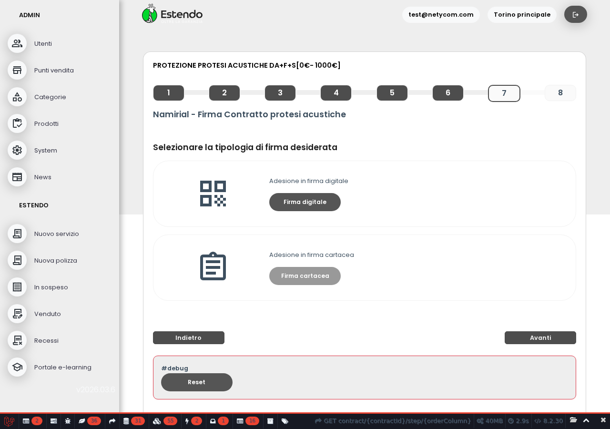
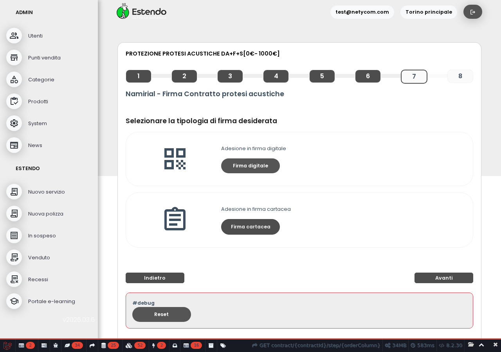

I due pulsanti per la scelta della firma sono ora chiaramente distinguibili: il pulsante principale (firma digitale) in verde, quello secondario (firma cartacea) in grigio scuro. Stessa logica applicata alla pagina di selezione servizio.
Nella schermata di firma del contratto c'erano due pulsanti visivamente poco differenziati: "Firma digitale" (verde) e "Firma cartacea" (grigio chiaro). Il grigio chiaro era troppo simile al verde su schermi di bassa qualità e rendeva meno immediata la scelta.

Il pulsante "Firma cartacea" ora usa lo stesso stile scuro dei pulsanti di navigazione. La differenza con il pulsante verde "Firma digitale" è molto più evidente: verde = azione principale, scuro = alternativa secondaria. Lo stesso cambiamento è stato applicato anche al pulsante "Prospetto informativo" nella pagina di selezione servizio.

| Campo | Valore |
|---|---|
| Server | Athena (staging) |
| URL target | estendo.sel.re/contract/{id}/step/7 |
| Scenario | Layout fix |
| Iterazioni | 1 |
| Commit | c1c8f8c |
| Verdict | FIXED |
La classe btn-prospetto era un CSS custom (#999 grigio chiaro) che creava una terza variante di pulsante non necessaria. Sostituita con btn-quiet già presente nel design system dell'app, che usa uno sfondo scuro coerente con i pulsanti di navigazione. Risultato: meno CSS custom, più coerenza visiva.